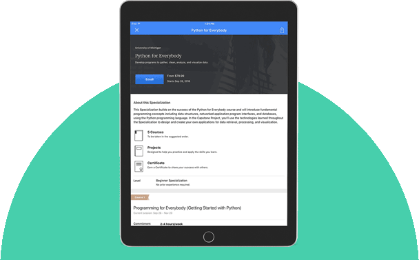

We envision an Africa where all health workers can improve on thier practice by having a universal access to continuous professional development courses, anywhere, anytime, and at thier convenience
Courses
Every course on OTRAC is taught by professionals from world class universities and institutions.
The course contains a pre-recorded video, audio and text, an auto-graded quiz, a completion project and exam.
Upon completion of any course, a certificate of proficiency is issued to participants
- Online and open to everryone
- Learn a new skill in 3 - 6 weeks
- Priced between $49 - $99
- Earn a course certificate
Specialization
 If you want to master a specific career skill, consider joining a Specialization.
You’ll complete a series of rigorous courses, tackle hands-on projects based on real business challenges, and
earn a Specialization Certificate to share with your professional network and potential employers
- Online and open to everryone
- Learn a new skill in 3 - 6 months
- Priced between $299 - $499
- Earn a course certificate
On OTRAC, you have access to
Mobile learningthrough our Apps for iOS and Android. |
Technical Supportthrough our dedicated community of mentors and learner support team. |
Shareable CertificateYou can add to your CV/Resume. |

Excellent ExperienceDesigned for Africans by Africans. |
 Our Story
Our Story
OTRAC was founded in 2016 by a public health scientist,
who wanted to find a better way of developing capacity of
health workers that will ensure universal coverage.
Farida Kabir conceived and initiated an idea of an online
platform where health workers can have access to courses at thier convinience.
Since then, a platform was built where health personnel can choose courses to take,
learn at thier own pace on thier mobile devices irrespective of thier location
and also earn acertificate capable of enhancing thier career progression.
The goal is to enhance capacity development towards excellent service delivery.
| 500 thousand | 20 | 200+ | 100+ |
| Learners | University Partners | Courses | Specializations |